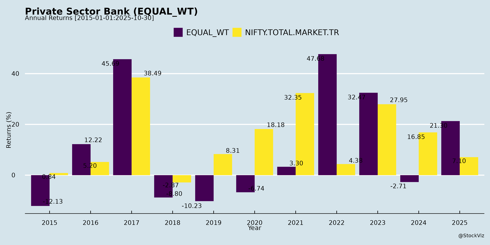
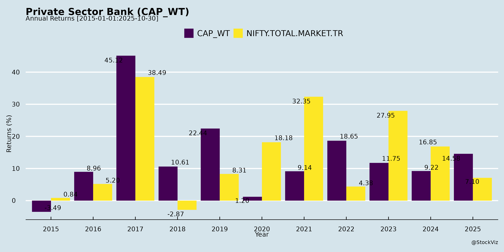
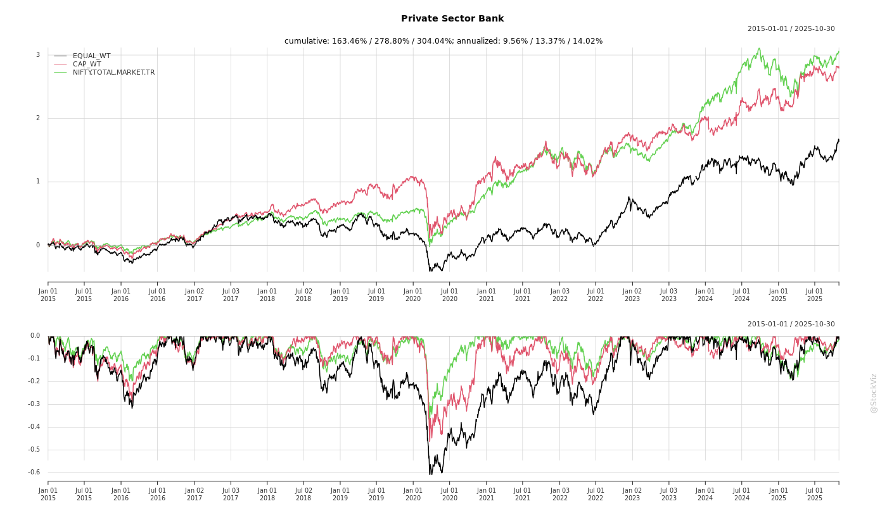
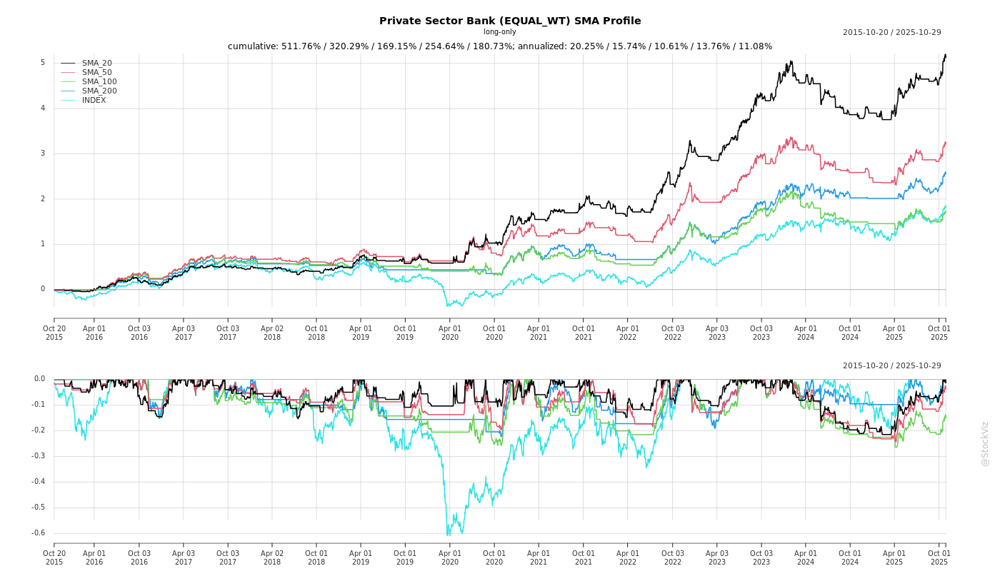
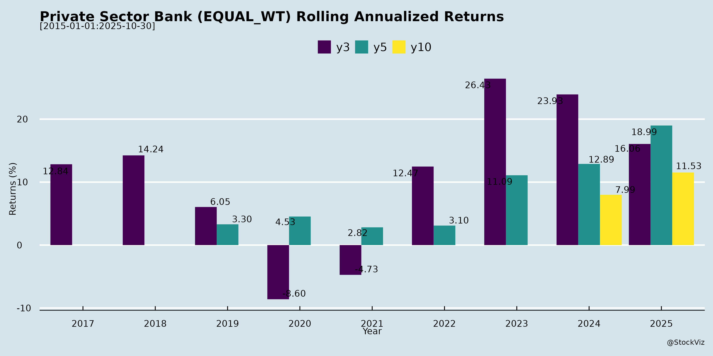
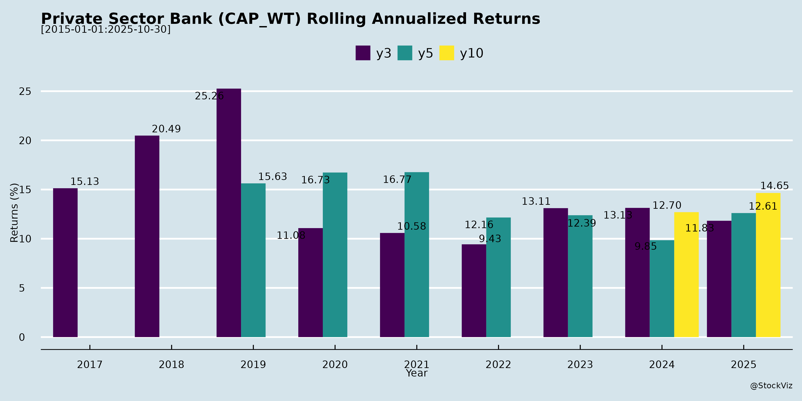

asof: 2025-12-03
The documents primarily consist of analyst/investor meeting intimation letters and earnings call transcripts from key private sector banks (e.g., ICICI Bank, IDFC FIRST Bank, HDFC Bank, Axis Bank, Kotak Mahindra Bank, etc.) for Q2 FY26 (quarter ended Sep 30, 2025). These highlight robust financial performance, strategic focuses, and forward-looking commentary amid a resilient Indian economy. ICICI Bank’s detailed transcripts provide the most granular insights (e.g., 10.6% YoY domestic loan growth, 4.30% NIM, improving asset quality), while IDFC FIRST Bank’s call emphasizes high growth (19.7% YoY loans) but MFI-related normalization. Other filings confirm active investor engagement (e.g., Macquarie tours, Morgan Stanley summits). Below is a structured summary of headwinds, tailwinds, growth prospects, and key risks for the sector.
| Risk Category | Details | Mitigation |
|---|---|---|
| Asset Quality | MFI/unsecured retail slippages (IDFC FIRST); BB+ corporates up slightly (ICICI: 0.3% advances). SMA/NPA trends to watch. | High PCR, contingency buffers; 5-quarter disclosures for early signals. |
| NIM/Rate Sensitivity | Further repo cuts (expected); deposit competition. | Repricing (55% EBLR loans), CRR benefits; range-bound guidance. |
| Regulatory | ECL (provisioning shift, neutral P&L impact per ICICI); risk weights (net +ve). | Model prep underway; conservative norms (e.g., ICICI PCR 75%). |
| Macro/External | Tariff hikes (exporters/SMEs); global volatility. Corporate demand weak. | Diversified retail focus (42.9% portfolio); 73% corporates A-+. |
| Execution | Opex control amid growth; CA share low (IDFC FIRST: 14% CASA). | Digital scale (e.g., InstaBIZ app); disciplined RoC principle. |
Indian private sector banks exhibit resilience and optimism amid policy boosts, with tailwinds from economic recovery, strong deposits/asset quality, and digital levers outweighing headwinds like NIM pressures and regulatory shifts. Growth prospects are bright for H2 FY26 (10-20% loans/deposits), driven by retail/business banking and operating leverage, targeting sustainable RoEs (15-18%). Key risks center on asset quality normalization (ex-MFI), rate dynamics, and ECL, but buffers and transparency mitigate them. Overall, the sector is positioned for profitable expansion (e.g., ICICI PBT ex-treasury +9%), with larger banks (ICICI/HDFC) leading stability and mid-sized peers (IDFC FIRST) offering high-beta growth. Investors should monitor Q3 NIM/credit costs for confirmation.
asof: 2025-12-02
Summary Analysis of Indian Private Sector Banks (Based on Q3 & 9M FY25 Results)
The analysis is derived from unaudited financial results (Q3/9M ended Dec 31, 2024) of major private banks including HDFC, ICICI, Axis, IndusInd, Federal, Bandhan, Karur Vysya, City Union, Tamilnad Mercantile, Jammu & Kashmir Bank, and others. Overall, the sector shows robust loan growth (10-20% YoY) driven by retail/wholesale segments, but faces margin pressures and asset quality concerns in select players. Profits grew 10-30% YoY for most (e.g., ICICI +15%, Axis +20%), but QoQ dips in some due to provisions. Capital adequacy remains strong (15-20% CRAR). Key metrics: Avg. Gross NPA ~1.5-2.5% (up from FY24 in microfinance-exposed banks), NIM ~3.5-4.2%, RoA ~1.5-2%.
Tailwinds (Positive Drivers)
Headwinds (Challenges)
Growth Prospects
Key Risks
| Risk Category | Description | Impact (High/Med/Low) | Banks Most Exposed |
|---|---|---|---|
| Asset Quality | NPA rise (microfinance slippages); provisions erode margins (Bandhan/IndusInd >2% GNPA). | High | Bandhan, IndusInd |
| Interest Rate | Beta on deposits > loans; NIM squeeze if rates stay high. | Med-High | All (HDFC/ICICI cushioned by scale) |
| Regulatory | RBI norms (investment FVTPL volatility, risk weights on EEB/SBAL); forex exposure provisioning. | Med | Mid-tier (higher retail %) |
| Liquidity | Deposit crunch (CASA <35% in some); LCR/NSFR pressures. | Med | Axis, Federal |
| Operational | Cyber/fraud risks; high OpEx (tech hires). | Med | Digital-heavy (ICICI/HDFC) |
| Macro | Slow GDP (rural distress), election volatility. | Low-Med | Rural/micro-focused |
Overall Outlook: Positive with Caution. Sector resilient (advances + RoA steady), but divergence: Leaders (HDFC/ICICI) outperform; laggards (Bandhan/IndusInd) need NPA cleanup. Growth intact at 15%+, but risks tilt to asset quality/regulation. Investors favor scale players with diversified books.
asof: 2025-12-03
Summary Analysis: Indian Private Sector Banks (Based on Provided Filings)
The filings from major private banks (HDFC, ICICI, Kotak, Axis, YES, IDFC First, IndusInd, Federal, Bandhan, Karur Vysya, City Union) highlight a resilient sector amid India’s robust economic growth (IMF FY26 GDP forecast: 6.2-6.8%), digital acceleration, and turnaround efforts. YES Bank’s detailed investor presentation provides the most comprehensive sector proxy. Below is a structured analysis of headwinds, tailwinds, growth prospects, and key risks.
Tailwinds (Positive Drivers)
Headwinds (Challenges)
Growth Prospects (Opportunities)
Projected Metrics (YES Proxy): Advances CAGR 6-7% FY26E; RoA 0.7-1%; granular retail/MSME to drive 15-20% segment growth.
Key Risks
Overall Outlook: Positive with moderate risks. Tailwinds from digital/economy outweigh headwinds; focus on granular retail/digital to sustain 10-12% sector growth. YES exemplifies turnaround potential (RoA from -7% to 0.7%), but vigilance on regulations key. Investors should monitor Q3FY26 asset quality & NIM.
asof: 2025-12-03
Summary Analysis: Indian Private Sector Banks (Based on Provided Documents)
The documents primarily cover Q2 FY26 earnings transcripts (ICICI Bank, IDFC FIRST Bank) and analyst/investor meeting disclosures from banks like HDFC, Kotak, Axis, YES, IndusInd, Federal, Bandhan, Karur Vysya, City Union, and RBL. They highlight resilient performance amid policy support, with ICICI showing mature stability and IDFC FIRST demonstrating high growth from a lower base. Below is a sector-level analysis.
Tailwinds (Positive Factors)
Headwinds (Challenges)
Growth Prospects
Key Risks
Overall Sector Outlook: Positive momentum with policy tailwinds driving H2 acceleration (loans ~12-20% FY26). Mature players (ICICI/HDFC) emphasize stability (RoE 16%, low NPAs); growth-chasers (IDFC) focus cleanup (MFI peak pain over). Risks manageable via buffers (ICICI PCR 75%, contingency INR13k Cr), but monitor NIM/ECL. Expect sustained mid-teens growth if economy sustains.
asof: 2025-12-01
Summary Analysis of Indian Private Sector Banks (Based on Provided Filings)
The provided documents from 11 private sector banks (HDFC, ICICI, Kotak, Axis, YES, IDFC First, IndusInd, Federal, Bandhan, Karur Vysya, City Union) primarily cover Q2/H1 FY26 financial results (where available), board actions (e.g., appointments, remunerations, stock splits), postal ballots/EGMs, and asset sales. IndusInd and City Union provide detailed financials; others focus on governance. Below is a sector-level analysis of headwinds, tailwinds, growth prospects, and key risks.
Headwinds (Challenges Pressuring Performance)
Tailwinds (Supportive Factors)
Growth Prospects
Key Risks
| Risk Category | Description | Mitigants/Evidenced Actions |
|---|---|---|
| Credit Risk | NPA spikes (IndusInd 3.6%; slippages from MFI/COVID resolutions). PCR stress (IndusInd notes). | Provisions up; NPA sales (Bandhan); Swiss Challenge auctions. |
| Governance/Operational | Accounting irregularities (IndusInd: ₹3,400 Cr+ discrepancies); BFIL lapses. Manual overrides. | Project Mgmt Groups, disciplinary probes; auditor qualifications (qualified in BFIL review). |
| Regulatory | RBI scrutiny on WTD remunerations (YES/ICICI/Axis/Federal postal ballots); fit-proper norms. | Heavy approvals sought; diverse boards (tech experts added). |
| Liquidity/Market | Deposit outflows; debt reliance. Rate volatility. | Strong CAR/LCR; borrowings approved. |
| Execution | Integration risks (e.g., Axis Citi; IndusInd mergers). Digital shift delays. | Leadership changes (IndusInd new MD/CEO/CFO). |
Overall Outlook: Sector resilient (strong CAR, retail focus) but faces near-term asset quality headwinds (esp. microfinance exposure). Growth via capital raises/digitalization promising, but governance fixes critical. IndusInd/Bandhan most vulnerable; HDFC/ICICI/Kotak stable. Monitor Q3 NPAs/RBI commentary.
asof: 2025-11-30
Summary Analysis of Indian Private Sector Banks (Q2 FY26)
The provided documents cover financial results, announcements, and press releases from key private sector banks (e.g., HDFC, Kotak, Axis, YES, IDFC FIRST, IndusInd, Federal, Karur Vysya, City Union, RBL, J&K Bank). Overall, the sector shows resilience amid moderating growth, with strong deposit mobilization, digital traction, and improving asset quality, but faces NIM pressures, provisioning spikes (esp. microfinance), and regulatory/legacy issues. H1 FY26 industry trends: Deposits ~7-23% YoY growth (CASA 10-27%), Advances 6-20% YoY, NIM stable/declining (2.5-3.7%), RoA 0.5-1.6%, GNPA 1.5-3.6% (improving), PCR 70-90%. Strategic moves like SMBC/RBL stake and Kotak split signal optimism.
Tailwinds (Supportive Factors)
Headwinds (Challenges)
Growth Prospects
Key Risks
Overall Outlook: Positive momentum with deposit strength/digital edge offsetting NIM/NPA pressures. Sector poised for 12-15% business growth FY26, RoA 1-1.5%, but MFI/legacy resolution critical. Strategic partnerships (SMBC/ENBD) enhance stability/prospects.
Copyright © 2023 SAS Data Analytics Pvt. Ltd. All rights reserved.